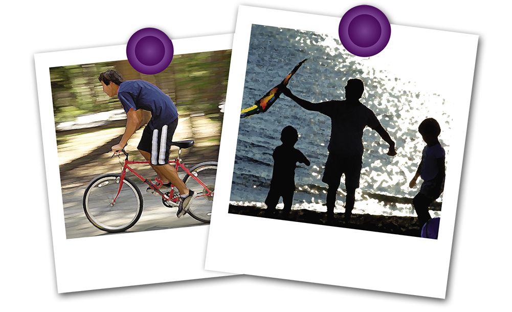

ආහාර හා සම්බන්ධ බෝ නොවන රෝග
(Diet related non- communicable diseases)
ශ්රී ලංකාව ඇතුළු බොහෝ දියුණු වෙමින් පවතින රටවල ඌණ පෝෂිත භාවයට තවමත් නිසි පිළිතුරු
ලැබී නොමැත. එමෙන්ම ආහාර හා සම්බන්ධ බෝ නොවන රෝගවල ඉහළ ම් ප්රවණතාවයක්ද මේ අතර පවති.
යම් රටක ඌණ පෝෂිත භාවය සහ ආහාර හා සම්බන්ධ බෝ නොවන රෝග එකම අවස්ථාවේ පැවතිම
ද්විත්ව මන්දපෝෂණය (Dual burden of malnutrition) ලෙස හඳුන්වනු ලබයි. මෙය දියුණු වෙමින්
පවතින රටවල් මුහුණපා ඇති පෝෂණය හා සම්බන්ධ ප්රධාන ගැටළුවකි.
ආහාර හා සම්බන්ධ බෝ නොවන රෝග වලට උදාහරණ කිහිපයක් පහත දැක්වේ
- දියවැඩියාව
- හෘද රෝග හා අංශභාගය
- අධික රුධිර පිඩනය
- අක්මාව සම්බන්ධ රෝග
- පිළිකා

මේ අතර බර වැඩිකම හා ස්ථුලතාවය (Obesity)නාගරික හා අර්ධ නාගරික ප්රජාව අතර මෙන්ම පාසල් ළමුන් අතර
ද වර්ධනය වීමේ ප්රවණතාවයක් පවතින බව මෑතකදි කරන ලද සමීක්ෂණ වලින් හෙලි වී ඇත.සෞඛ්යට නුසුදුසු ආහාර
පුරුදු සහ ක්රියාශිලි බවින් අඩු දිවි පැවැත්මක් මේ තත්තත්වය වැඩි දියුණු කිරිමට මග පාදයි.
සෞඛ්ය සම්පන්න ආහාර පුරුදු සහ ශාරීරික ව්යායාම් යන දෙකම නිරෝගි දිවි පැවැත්මකට අත්යාවශ්ය වේ.
පාසල් දරුවන් අතරේ සිඝ්රෙයන් පැතිර යන මෙම ආහාර හා සම්බන්ධ බෝ නොවන රෝග ගැන දැණුවත්බව
ඇතිකර ලිම මෙම ප්රශ්ණයට දිය හැකි කාලීන හා ප්රතිථලදායී විසඳුමකි.